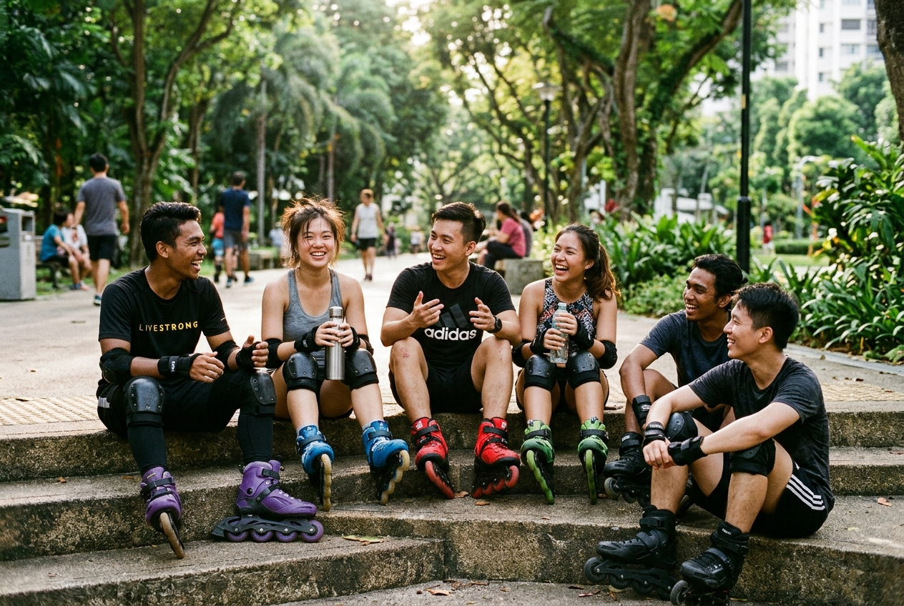
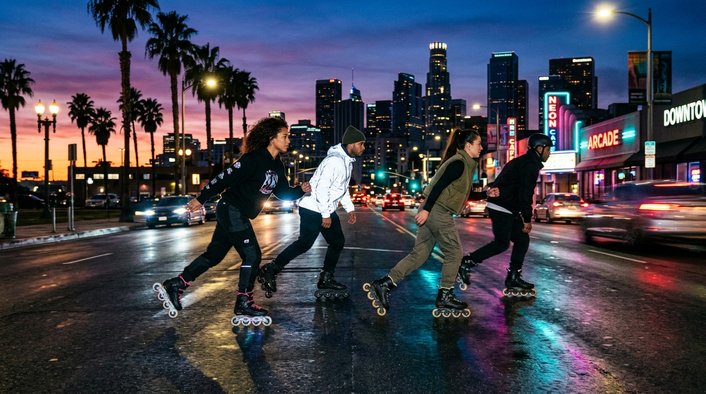

Teknik
Teknik
Freestyle Slalom
Latihan teknik melewati cone untuk melatih keseimbangan, koordinasi kaki, dan kontrol sepatu roda yang presisi.
Lihat Detail AktivitasA community for everyone who loves inline skating. Skate, connect, learn, and grow together with Zoo Street Skaters.


Open CommunityZoo Street Skaters adalah komunitas inline skating di Surabaya yang mempertemukan pemula hingga skater berpengalaman untuk berlatih, berbagi teknik, dan menikmati olahraga sepatu roda bersama.
Tanpa batas level kemampuan, kami menjaga ruang berkumpul yang terbuka dan saling mendukung agar setiap anggota bisa berkembang sesuai ritmenya sendiri.
Pelajari Lebih Lanjut Tentang KamiEmpat fokus aktivitas yang dapat kamu ikuti sesuai minat dan gaya bermain sepatu roda.
Teknik
Latihan teknik melewati cone untuk melatih keseimbangan, koordinasi kaki, dan kontrol sepatu roda yang presisi.
Lihat Detail Aktivitas
JalananAktivitas inline skating bersama menjelajahi area perkotaan dengan tetap mengutamakan keamanan rombongan.
Lihat Detail Aktivitas Park
Park
Eksplorasi teknik, kelincahan, dan gerakan skating di area skatepark bersama rekan komunitas.
Lihat Detail Aktivitas Komunitas
Komunitas
Kegiatan sosial, berkumpul, saling mengenal sesama anggota baru maupun lama, dan bermain sepatu roda bersama.
Lihat Detail AktivitasTiga titik latihan mingguan Zoo Street Skaters di Surabaya berdasarkan informasi resmi profil komunitas.
Selasa Malam
Time to be confirmed
Jumat Malam
Time to be confirmed
Minggu Pagi
Time to be confirmed
Jam pasti sesi latihan belum dikonfirmasi oleh pengelola dan dapat menyesuaikan kondisi cuaca. Cek pembaruan jadwal lengkap di halaman Activities sebelum hadir.
Fokus aktivitas dan ruang berkumpul yang tersedia bagi pemula maupun skater aktif.
Berpusat di Surabaya dengan 3 lokasi pertemuan publik yang mudah diakses.
Pertemuan rutin setiap Selasa malam, Jumat malam, dan Minggu pagi.
Mencakup Freestyle Slalom, Urban Skating, Skate Park, dan Community Gathering.
Terbuka untuk siapa saja yang ingin belajar dasar inline skating bersama komunitas.
Everyone is welcome. Start your skating journey with Zoo Street Skaters.
Tautan resmi WhatsApp dan Instagram akan diaktifkan setelah dikonfirmasi oleh pengelola komunitas.